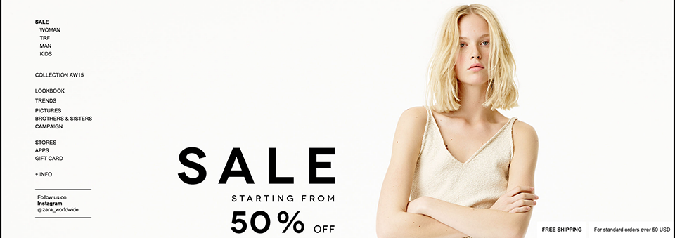

Hello everyone! My name is Vance Wamley (Wam-lee) and I am a current student at Full Sail University.
There really isn't a lot to know about me I a pretty chill person. I like to Eat, Sleep, and play Basketball.
Other than that I just like to relax and enjoy my day. As for Web Designing I first got started with it in high school.
My teacher at the time really made use of all the
information he knew about web design even if it wasn't much it was enough for me to try to keep the ball running.
As I'm going through my course I'm starting to learn who I am as a designer
and that the road to get to where I want is really hard. But I plan to push and see this to the end.
Component Library
Call to Action (Zara.com)

Target Audience:
This is a really high-end fashion website. That targets anyone that is really into fashion,
looking for style trends, or just looking for clothes in general. The age group varies,
but if I had to give a guess it would be from 18 years of age and up because that is the average age you cement your
clothing style.
Client/User Needs:
Seeing that this is the first thing that you see is the female staring at you.
The design was used to grab the users attention and notice that the site is having sale or a
store event is going on. This also gives the users a visional of the types of clothes that are on sale.
Also the image give the user a clue what the leading trend that is going on.
Design Critique:
The Site makes use of the plain background making sure not to distract the user from the main content. They also
incorporated a warm color to match the season. Which can also lead to the users to buying the summer clothing they have on sale.
If you notice that all the important areas that they want users to visit are bold such as the sale link,
the Instagram title and the Free shipping deal. I find it interesting how the navigation bar is designed this way to lead the clients eye down and to notice the
huge sale deal. Staying with the navigation bar they have a really good way to draw the female users in by having the
Woman clothing link on top.
Footer (HipHopEarly.com)
Target Audience:
The Target audience here is the new artist, the next big thing, and the wannabe rapper that thinks he can rap.
The age range could range from possibly 20 years of age and whenever artist believe they should stop producing music.
Client/User Needs:
The client provides a way for the user to get their foot in the door. To ask questions about the business or the site in
general. This also provides a link to the DMCA this is good for those who have no idea what this is or what they do.
Design Critique:
Its really simple and easy to use. I'm kinda sad that the logo on the bottom isn't a form of a escape hatch.
Video CTA (Wizkhalifa.com)
Target Audience:
The target audience would more than likely be Wiz Khalifa Fans or music lovers in general. The age range
for the group would be around 16 years of age and up.
Client/User Needs:
Just because of the current song that is up for certain fans this is a joy to see. This
will cause them to stay and watch the video or to continue to browse the home page while they listen.
its almost in the right position(will be discussed below).
Design Critique:
The placement of the video could have been a lot better. The fact that it has a decent amount of margin between it and the
navigation bar was good because as the user is watch from time to time the user will take a glance at the links. But this can
also distract them from noticing it because it s the first thing your eyes are drawn too. Also as you scroll down a little
you'll see that the lyrics are at the bottom for the user to sing along with the song. The problem is that you can't see them
the following content and ad block it from view.
News Feed (HipHopEarly.com)
Target Audience:
This section of the website would be for the older music lovers that likes to know what's going on within the music industry
and their favorite artist. This would more than likely be from 18 years of old and up.
Client/User Needs:
Right from the start I can tell that the client wants to get out new information from the music industry and
all the latest gossip. The user can read a short description about the articles and choose the best one that
peaks their interest.
Design Critique:
I like the fact that its only 3 articles are posted so it doesn't take away from the rest of the site.
You notice the size of the article varies this is probably used to declare the newest one posted. IE bigger is newer
and smaller is older.
This is for visitors of the website to contact the web team of audiomack. More than likely this is going to attract
New artist looking to get their music out for the world to hear.
Client/User Needs:
The Client more than likely wants to recieve feedback from users to see what's going on within the site.
the client would also like to receive user's work and post the content.
Design Critique:
It's a really simple design and its really easy to use. Do to some previous advice I would change the title of the page to something
else.I think the touch of the concerning section where you can choose the issue you are having is also great.
 Target Audience:
Target Audience:
 Target Audience:
Target Audience:
 Target Audience:
Client/User Needs:
Design Critique:
Target Audience:
Client/User Needs:
Design Critique:
 Target Audience:
Client/User Needs:
Design Critique:
Target Audience:
Client/User Needs:
Design Critique:
 Target Audience:
Client/User Needs:
Design Critique:
Target Audience:
Client/User Needs:
Design Critique:
 Target Audience:
Client/User Needs:
Design Critique:
Target Audience:
Client/User Needs:
Design Critique: